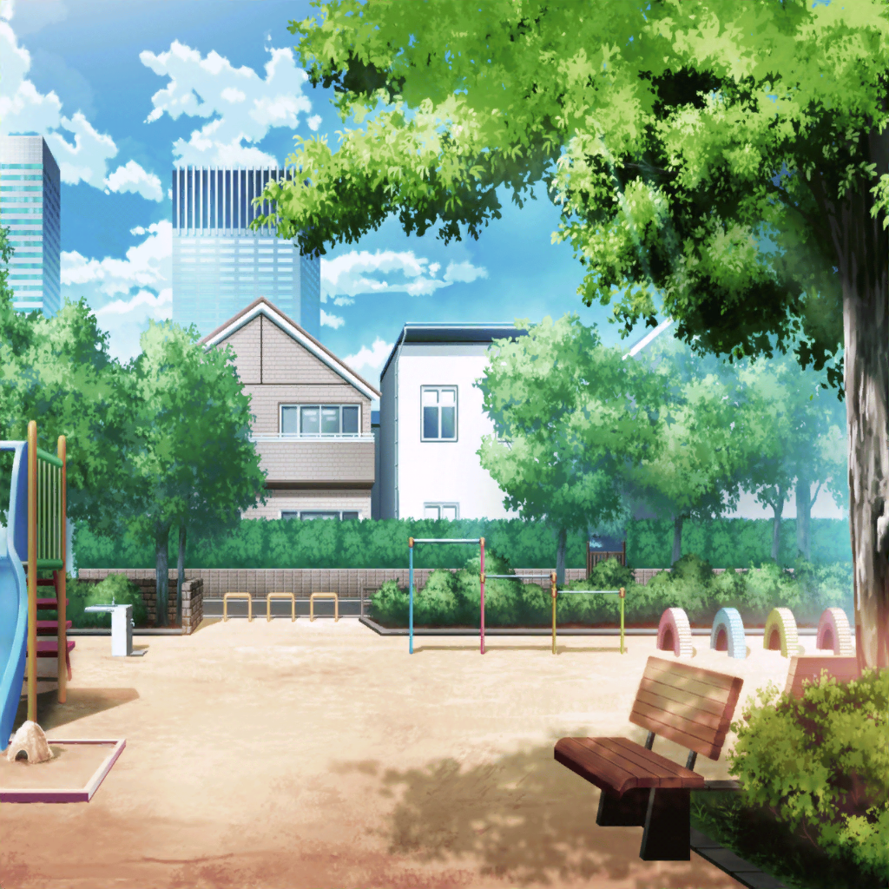

公園
りみ
ん～！
お日様は笑顔だし、空は青いし
今日はいい天気だなぁ……
りみ
って、あれ？
何か聞こえるような……
薫
――が！
どこへ――！！
りみ
この声って、薫さん！？
薫
おのれ！！
姫をたぶらかす悪魔め！！
今こそ私がここで討つ！！
りみ
演劇の練習かな……？
すごい……
この迫力、練習とは思えないよ
薫
ん？
そこにいるのは……りみちゃん？
りみ
あっ！ はい！
すいません、勝手に見てて……
薫
いや、いいんだよ。
見られて困ることでもないからね
薫
ところで、今日はどうしたんだい？
まさか、砂場で遊びに来たわけではないんだろう？
りみ
えっと……
今日はお天気がよかったので、
お買い物に行って、その帰りなんです
薫
なるほどね。
だから、荷物を持っているのか
りみ
はいっ！
薫さんは、演劇の練習……ですよね？
薫
うん、次にやる劇のね。
でも、少し休憩することにしよう。
可愛い子猫ちゃんとお話する時間だ
りみ
こ、子猫っ……！？
薫
それとも、私とお話するのは嫌かな？
りみ
そ、そんなことないです！
ぜひ、お話させてください！！
薫
それで、今日は何を買いに行っていたんだい？
りみ
やまぶきベーカリーって知ってますか？
そこに売っているチョココロネを買いに行ってたんです
薫
なるほど。
確かに、あそこのパンは美味しいね
りみ
ですよねっ！
……あっ！
薫
ん？
何か思い出したのかい？
りみ
あの……
結婚式の写真撮影の時の薫さん、
タキシードが似合ってて、素敵でした！
薫
ありがとう。
そう言ってもらえると、やった甲斐があるよ
りみ
（わぁ……笑顔も素敵……）
薫
私の顔を見つめてどうかしたかい？
何かついているのかな？
りみ
す、すいません！
あまりに素敵だったもので！！
……って、あっ！？
りみ
な、なんでもないです……！
薫
ふふっ。
そうか。本当にありがとう
りみ
……！！
ちょっと沙綾ちゃんがうらやましいです……
薫
ほう？
それはなぜだい？
りみ
私も、薫さんと一緒に写真撮りたかったな……って
薫
なら、一緒に撮ろう
りみ
えっ！？
そ、それはどういう……
薫
そのままの意味だよ。
今からこの間の結婚式場に行って
ドレスとタキシードを借りるんだ！
薫
結婚式のやり直しだよ！
りみ
け、結婚式のやり直し……
わ、私と薫さんが……！？
薫
ああ、そうだよ。
私とは嫌かな？
りみ
ぅ……あ……！
きょ、今日はその、この後用事があるので！
ま、また今度でお願いします……！
りみ
そ、それじゃあ……！
失礼しまーーーすっ！！
薫
行ってしまった。
ふふ、照れ屋な子猫ちゃんだ